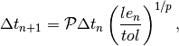
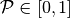
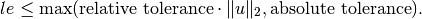
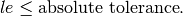

The constructor initializes the following class variables
self.dtmax = (T[len(T)-1]-T[0])/10.0 # Max time step
self.dtmin = 1e-14 # Min time step
self.nAcc = 0 # Number of accepted steps
self.nRej = 0 # Number of rejected steps
self.accepted_steps = [] # Accepted steps
self.rejected_steps = [[],[]] # Rejected steps
self.Feval = 0 # Number of function assemblies
self.Jeval = 0 # Number of Jacobian assemblies
# Variables for storing previously accepted / rejected time steps
# with corresponding estimated local error. This is used in the
# Gustafsson step size selector.
self.le_acc = 0 # Rejected local error
self.le_rej = 0 # Rejected time step
self.dt_acc = 0 # Accepted local error
self.dt_rej = 0 # Accepted time step
self.pfactor = 0.8
self.stepRejected = False
self.consecutive_rejects = 0
It is also responsible for creating and populating the Parameter-object
# Create parameter object
self.parameters = Parameters("gryphon")
self.parameters.add("verbose",False)
self.parameters.add("drawplot",False)
self.plotcomponents = range(u.value_size())
# Parameter set "output" nested under "gryphon"
self.parameters.add(Parameters("output"))
self.parameters["output"].add("plot",False)
self.parameters["output"].add("path","outputData")
# Parameter set "timestepping" nested under "gryphon"
self.parameters.add(Parameters("timestepping"))
self.parameters["timestepping"].add("dt",self.dt)
self.parameters["timestepping"].add("adaptive",True)
self.parameters["timestepping"].add("pessimistic_factor",self.pfactor)
self.parameters["timestepping"].add("absolute_tolerance",1e-7)
self.parameters["timestepping"].add("relative_tolerance",1e-6)
self.parameters["timestepping"].add("convergence_criterion","absolute")
self.parameters["timestepping"].add("dtmax",self.dtmax)
self.parameters["timestepping"].add("dtmin",self.dtmin)
self.parameters["output"].add("statistics",False)
# Set range for parameter-object
self.parameters["timestepping"].set_range("convergence_criterion",["relative","absolute"])
self.parameters["timestepping"].set_range("pessimistic_factor",0.0,1.0)
# Select default step size selector and populate choices.
self.parameters["timestepping"].add("stepsizeselector","standard")
self.parameters["timestepping"].set_range("stepsizeselector",["gustafsson","standard"])
# Dictionary which contains the step size selectors.
# Needed since the FEniCS parameters system is unable to store function handles
self.stepsizeselector = {
"gustafsson" :self.dtGustafsson,
"standard" :self.dtStandard
}
This method updates the class variables with values from the parameter dictionary. The method should be called just before starting the time stepping process.
This method will be called right before a gryphon-program terminates. The method will then check which output parameters are set and will then call appropriate methods for generating the desired output. Relevant methods are savePlot() and saveStatistics().
The purpose of this method is to save a plot of the selected/rejected steps made by Gryphon. The plot will only be saved if the parameter
solverObject.parameters['output']['plot'] = True
The file will be named steps.eps and will be placed in the path defined by
solverObject.parameters['output']['path']
The header of the plot will include which step size selector was used. Note that this feature requires that the package ‘matplotlib’ is installed. If you are running Gryphon in an environment without graphics, matplotlib must use the ‘agg’-backend in order for the plot to be saved successfully.
The purpose of this method is to generate useful output to the user before the program terminates. It will only execute if the parameter
solverObject.parameters['output']['statistics'] = True
Both a LaTeX-table and an ASCII-table will be generated and written to the path defined by the parameter
solverObject.parameters['output']['path']
Note that the LaTeX-table will only be written if the program terminated successfully (terminateReason = "success"). The ASCII-table will always be written. The two files will be named
The tables will contain the following information:
This method is responsible for both plotting and saving of the numerical solutions in each time step. It is first called with the keyword argument Init=True to initialize the plot windows and pvd-files. Then, for each time step, the method is called with the keyword argument Update=True. The plots are initialized with the keyword argument rescale=True and will be saved in the path defined by the parameter
solverObject.parameters['output']['path']
This method features the implementation of the step size selector developed by Kjell Gustafsson ([1], [2]) for implicit Runge-Kutta methods. To use this step size selector in your program, update the parameter
solverObject.parameters['timestepping']['stepsizeselector'] = "gustafsson"
| [1] | Control of Error and Convergence in ODE Solvers. PhD thesis, Lund Institute of Technology, 1992. |
| [2] | Control theoretic techniques for stepsize selection in implicit Runge-Kutta methods. ACM TOMS, 21(4):496-517, 1994. |
This method features a step size selector on the form

where  is the pessimistic factor. The pessimistic factor can be changed by the parameter
solverObject.parameters['timestepping']['pessimistic_factor']
To use this step size selector in your program, update the parameter
solverObject.parameters['timestepping']['stepsizeselector'] = "standard"
This method is designed to be a safety net for the step size selectors. It operates according to the following rules:
A new time step can not be greater than 1.5 times the old time step or the user specified limit
solverObject.parameters['timestepping']['dtmax']
A new time step can not be smaller than 0.1 times the old time step or the user specified limit
solverObject.parameters['timestepping']['dtmin']
If a time step overflows the integration domain, it is capped.
The purpose of this method is to check whether or not the current time step should be accepted or not. If
solverObject.parameters['timestepping']['convergence_criterion'] = "relative"
the step is accepted if

If
solverObject.parameters['timestepping']['convergence_criterion'] = "absolute"
the step is accepted if

The relative/absolute tolerance is set via the parameters
solverObject.parameters['timestepping']['absolute_tolerance']
solverObject.parameters['timestepping']['relative_tolerance']